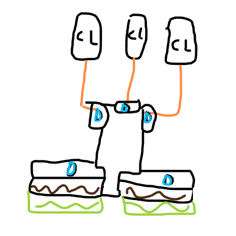

Chickenheimer Disaster
In reflecting on my decision then and the aftermath brought about by it, I am reminded of an old proverb; You hatch what you lay.
- Jon of Mittelwald, on inventing the Chickenlooper
The Chickenheimer Disaster was a mass-chicken terror attack on the Tae Torkan People's Republic coordinated by the Swallowtail Phenomenon Research Institute (SPRI) on 1046Nov. 26, 2023 AVL. The Chickenheimer Disaster was responsible for the large-scale irradiation and ensuing evacuation of Tae Torka, a predecessor to the settlement of the Pladsylvanian Confederation.
᎒☰ Contents
☰ Contents
Background
Following the widespread outlawing of the use of chickenloopers, SPRI continued covertly performing mass-chicken research operations. While government funding to SPRI was believed to have ceased, a clerical oversight by the Tae Torkan government led to SPRI continuing to receive supplies and tools. During ongoing research, a growing resentment of the Tae Torkan government began to develop amongst SPRI scientists. This combined with the rising delirium of SPRI CEO Jack led to the creation of Project Chickenheimer, an operation intended to bring an end to Tae Torka and all who inhabited it.
Development
The “Chickenheimer Device”, sometimes referred to as “The Entity”, was composed of three principal segments, and operation of the device was likewise divided into three “phases”.

The second segment, deemed the “blast column”, was designed to hold the chickens intended to cause the principal Percivation Split. Once all chickenloopers were adequately charged, eggs produced by the chickenloopers would be redirected into the blast column, transferring the device to Phase 2. Phase 2 consisted of filling the blast column with a total of 44100 chickens over only 2.25 hours time. Afterwards, chickens were primed with water breathing and fire resistance potions to prepare them for the third segment.
The final segment, deemed the “blast chamber”, was a 21x21 reinforced chamber with 5 block thick walls to prevent poultry phasing. The base of the chamber consisted of water with a floor of soul sand which could be raised and lowered to toggle bubbling. Phase 3 consisted of lowering primed chickens into the blast chamber and allowing for full distribution amongst the chamber before activating bubbling. In addition, chickenloopers would continue to pipe chickens into the blast column, which would subsequently redirect them into the blast chamber.
Reception
Project Chickenheimer was generally negatively received by Tae Torkans. During the days required to charge the device, the effects of merely the chickenlooper components were enough to send lag shockwaves across Tae Torka. These shockwaves alerted Tae Torkan authorities to the possibility of illicit chickenlooper activity.
In order to cover up the origin of these lag spikes, SPRI scientists were instructed to build chickenloopers across the realm with the intention of them being discovered and blamed for the lag. One such chickenlooper was constructed above Manorval, and was promptly found and blown up several hours later.
Upon the full charging and priming of the Chickenheimer Device, SPRI CEO Jack broadcast a warning message across Tae Torka, declaring the completion of his work and publishing “A History of COW Farms and Their Consequences”. The machine was then switched to Phase 3, and immediately the entirety of Tae Torka was inundated with the effects of mass-chicken radiation, inducing percivation splits, mass famine, time dilation, and locatory entrapment. An immediate evacuation of Tae Torka was scheduled by Jon, and all citizens were loaded onto ships. The only exception was Jack who, being at the epicenter of the blast of the Chickenheimer Device, was presumed dead. In addition, due to being the one to cause the blast, Jack was considered undesirable and a war criminal, and as such likely would not have been relocated even if such a task were easy.
Legacy
In an attempt to resettle citizens displaced by the Chickenheimer Disaster, the remains of the Tae Torkan government had to travel an immense distance. Upon settlement of this new location, the Pladsylvanian Confederation was formed.
In addition, after learning that Jack did in fact survive the blast of the Chickenheimer Device, one of the first directives of the Pladsylvanian government was to hunt down Jack and charge him for war crimes. His eventual capture resulted in him being imprisoned in the middle of a lava lake in the nether, with Pladsylvanians being instructed to throw garbage down at him from the nether roof. This was the origin of the settlement of Unterarmut.